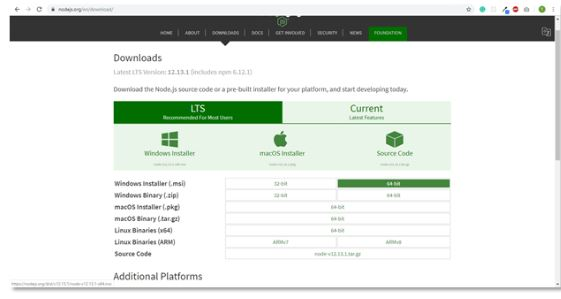
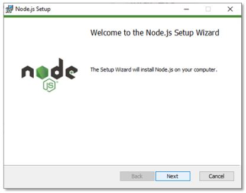
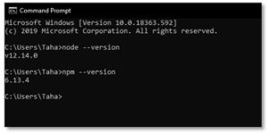
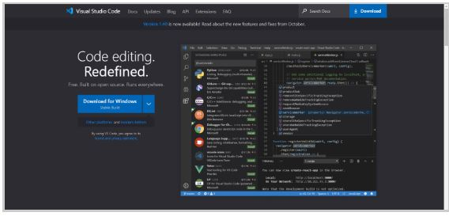

<div class="page">
    <section class="section">
        <div class="section-title"><h1>Instalation</h1>
            <hr>
        </div>

        <div class="section-subtitle"><h3>1. Download the Node.js from <a href="https://nodejs.org/en/download/">HERE</a> . Select the installer according to your operating system and environment.</h3></div>
        
        
        <div class="section-subtitle"><h3>2. Run the Node.js installer. Accept the license agreement. You can leave other settings as default. The installer will install Node.js and prompt you to click on the finish button.</h3></div>
        

        <div class="section-subtitle"><h3>3. Verify that Node.js was properly installed by opening the command prompt and typing this command: <b>node --version</b> </h3></div>
        

        <div class="section-subtitle"><h3>4. When we install Node.js, NPM (Node Package Manager) is also installed. NPM includes many libraries that are used in web applications, such as React. Verify whether it is installed or not with the following command in CMD: <b>npm --version</b> </b> </h3></div>
       <hr>
    
        <div class="section-subtitle"><h2> Text Editor </h2></div>
        <div class="section-subtitle"><h3>Install a text editor of your choice. We are using <a href="https://code.visualstudio.com/">Visual Studio Code</a>  in this tutorial, but you can also use other editors, like Atom and Sublime Text, if you are more comfortable with those.</b> </b> </h3></div>
        


        <div>
            <a href="/setup" class="next-step" > <h1>Next Step </h1> <p> >> Project Setup </p> </a>
        </div>

    </section>


</div>


</body>
</html>